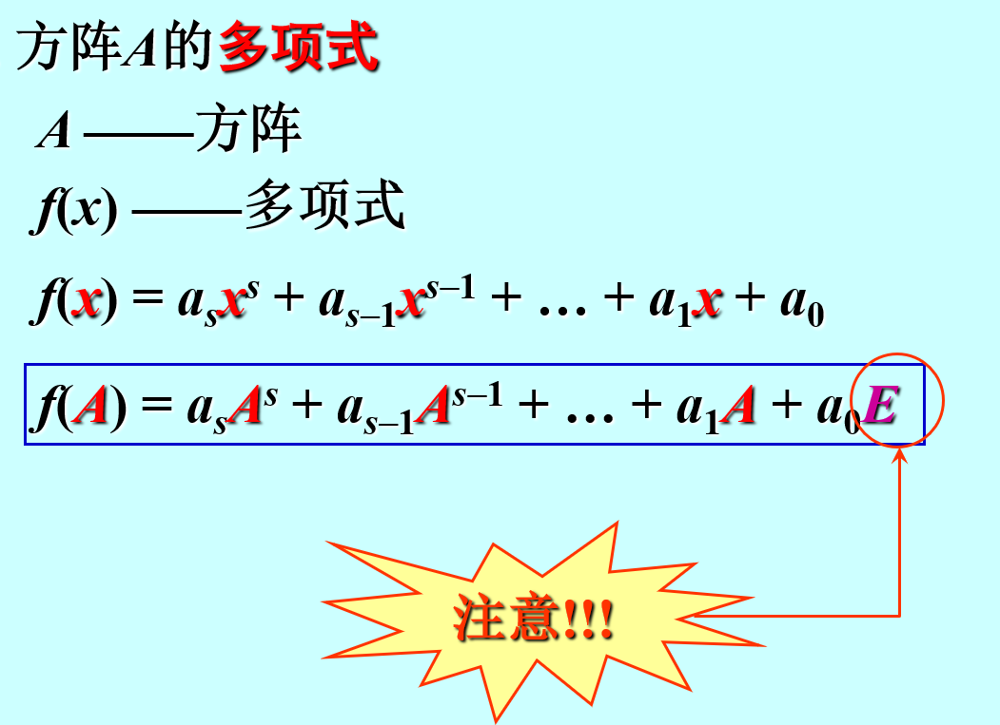
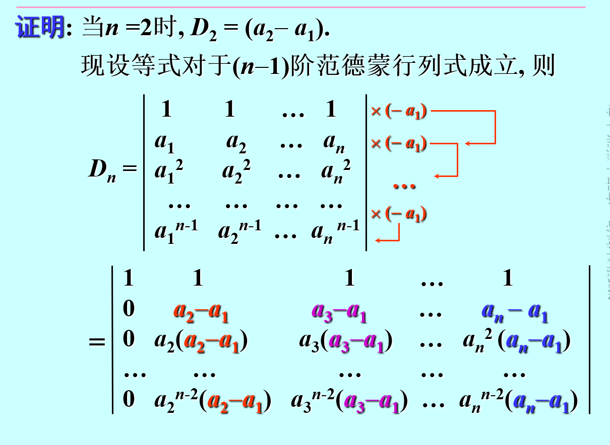

不止为方阵
通常用 ∧表示，可记为∧=diag(a11,a12,…)
对角矩阵主对角线上元素相等
只能方阵
上三角下三角，主要应用于求分列式及方阵的LU分解
主要用于求秩
暂时未知
AT=A或Aij=Aji
Aij=−Aji
故主对角线元素都为0
{加法数乘：kA=Ok=0或A=O
结合律：(AB)C=A(BC)
分配律:A(B+C)=AB+AC 注意左乘右乘
交换律：AB=BA 同阶对角矩阵及逆矩阵满足交换律
消去律：A=O,AB=AC⇒B=C 未必成立
(A+B)n=∑i=0nCniAiBn−1 当A=B时成立**
A=[1010]，Ak=AB=[1100],Bk=B

(A+B)2=A2+B2+AB+BA
(A+B)(A−B)=A2+BA−AB−B2

按列分块→行向量
按行分块→列向量
分块对角矩阵

- 对换变换
- 倍乘变换
- 倍加变换
若矩阵A经过有限次初等变换化为B, 则称A与B等价(equivalent). 记作A≅B
Em×n(r)为Am×n的等价标准形
任何一个矩阵都可以经过有限次初等变换化为标准形.
变换技巧：按从第一列到最后一列的顺序，先将A变换为行最简形再变为等价标准形

初等矩阵左乘：行变换
初等矩阵右乘：列变换
初等矩阵的逆矩阵仍为初等矩阵
- 唯一性
- (A−1)−1=A
- (AT)−1=((A−1)T
- (kA)−1=k−1A−1
- (AB)−1=B−1A−1
- A可逆→A可写成初等矩阵的乘积.
- Am×n=Pm[Er000]Qn
称为A的标准分解
- 行列式= 0
- 分块对角矩阵A−1=diag(A1−1,A2−1,⋯,As−1)
- 合并矩阵再行/列变换
- A−1=∣A∣1×A∗
待定系数- 已知等式

在n阶行列式中,把元素aij所在的第i行和第j列划去留下来的阶行列式叫做元素aij的余子式,记作Mij,令Aij=(−1)i+jMij并称之为aij的代数余子式(cofactor).
∣A∣=∑j=1naijAij,A=(aij)n×n
- ∣∣AT∣∣=∣A∣
- A一次对换变换B,∣A∣=−∣B∣
- 若行列式 D 中有两列完全相同, 则 D = 0若行列式 D 中有两列元素成比例,则D=0.
故∣An×n∣=a,则∣kAn×n∣=kna- 倍加变换不改变行列式的值
- n阶方阵A B，∣AB∣=∣A∣∣B∣
- ai1Aj1+ai2Aj2+⋯+ainAjn=0,i=j
即不同行的代数余子式与某行元素乘积之和为0
- 对角线法则
- 初等变换为三角矩阵
- 按含0较多的行/列展开
- 分块对角矩阵[A0BC],D=∣AC∣




An×n已知，则A∗=⎣⎡A11A12⋮An1A21A22⋮An2⋯⋯⋯An1An2⋮Ann⎦⎤
特殊
A=[acbd],A∗=[d−c−ba]
- AA∗=A∗A=∣A∣E
- A−1=∣A∣1A∗


r(A)=r{A中至少有一个r阶子式D不为零A的所有r+1阶子式都等于零
零矩阵的秩规定为0
- 初等变换不改变秩
- r(AT)=r(A)
- r(A)=r(PA)=r(AQ)=r(PAQ),P Q为可逆矩阵
1. maxr(A),r(B)≤r(A,B)≤r(A)+r(B)
2. r(A)+r(B)−n≤r(AB)≤minr(A),r(B),对于Am×n,Bn×t
3. r[AC0B]≥r(A)+r(B)
4. As×nBn×r=0,则r(A)+r(B)≤n（由2.推出）
5. r(A∗)=⎩⎨⎧n,r(A)=n1,r(A)=n−10,r(A)<n−1
6. Am×n=Pm×m[Er000]m×nQn×n
7. 设A为s×n矩阵,证明r(A)=1的充要条件是存在非零s维列向量ξ和非零n维列向量η,使得A=ξηT
将矩阵初等变换为行阶梯型，阶梯数（非零行数目）即为秩